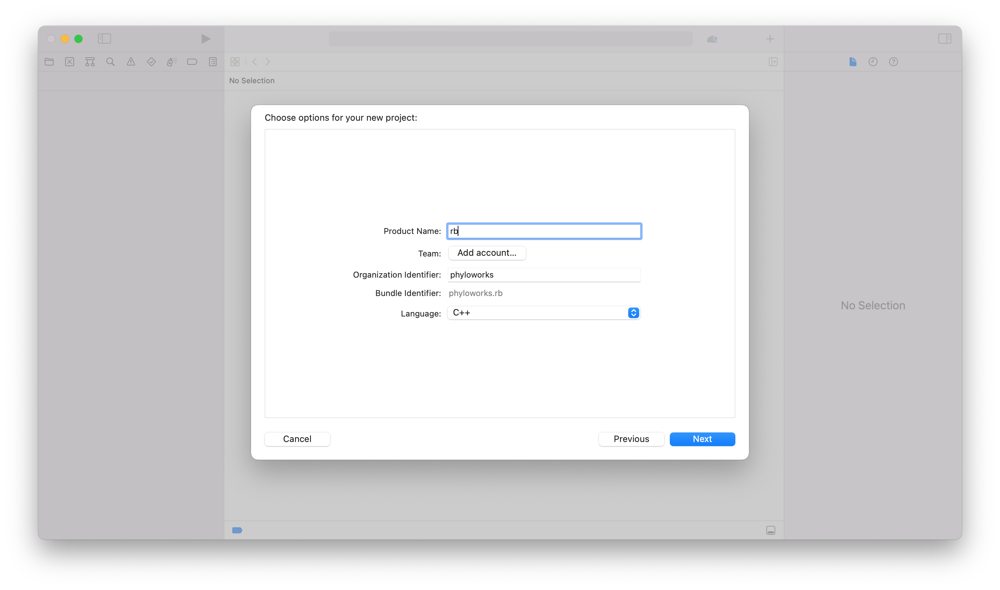
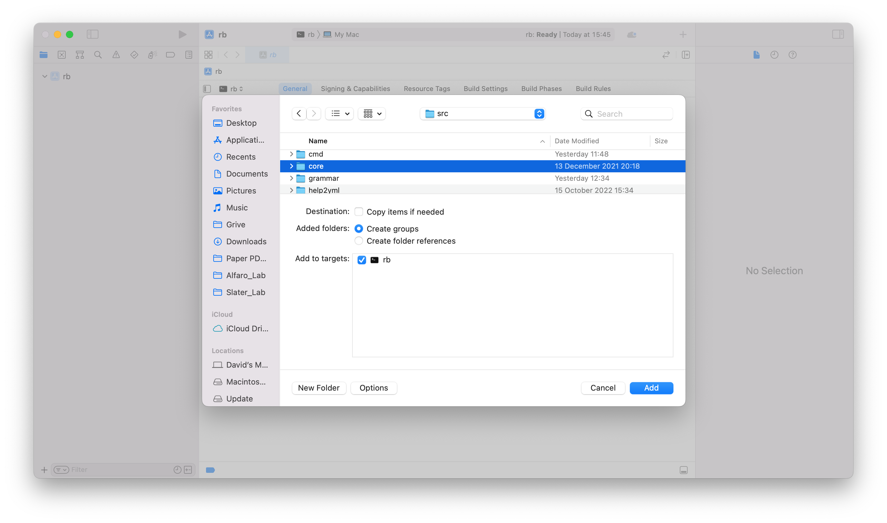
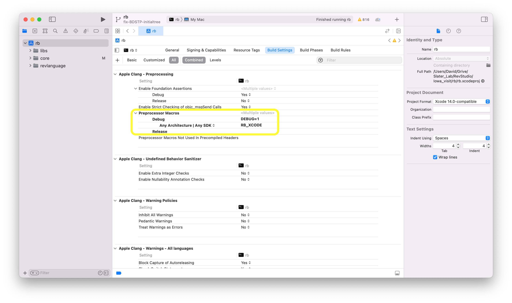
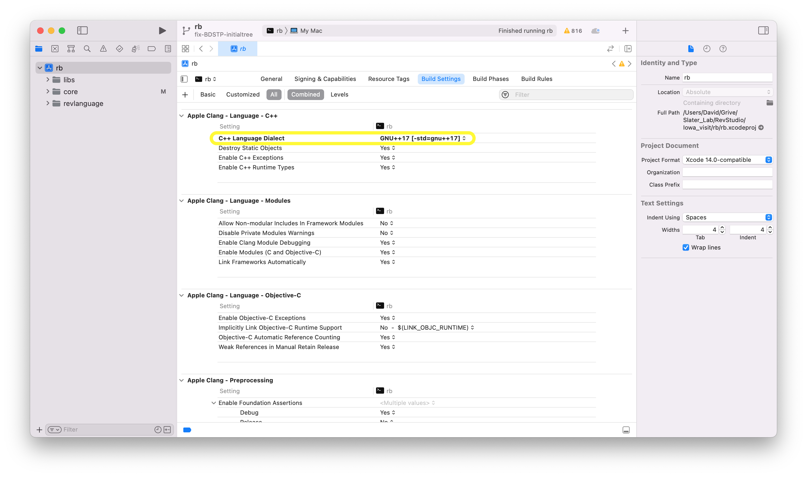

XCode is an IDE for Mac OSX. XCode does not keep track of files, so each time you open your RevBayes project in XCode you must pull revbayes-master from git & remove reference to all of the source. Eclipse Oxygen does a cleaner job of managing the files; you do not need to pull from git each time you work in it.
Set up the XCode Project
- Open Xcode and in the Welcome to Xcode window, choose Create a new Xcode project.
- Select Command Line Tool and name it
rband click Next.  - Click New Folder to create an empty directory and name it whatever you’d like.
- Click Create.
- Delete all of the files and folders in each of the directories including
main.cppso that RevBayes is empty. You can do this by selecting the folders and files, right clicking and selecting delete. When asked, choose Move to Trash. - Add the source files by selecting the appropriate directory and going to the File pull-down menu and selecting Add Files to rb.
- Click on Options at the button of the window, and under the Added Folders heading, select the Create Groups radio button.
* Select the
*
revbayes/src/revlanguage*revbayes/src/core*revbayes/src/libs* directories and click Add.  * Note: On some versions of XCode, you may need to click on the “Options” Tab, and choose “Create Groups” for the import to work properly. This is the default behavior on most XCode installs. - Add the boost library to your Xcode project
* Select the RevBayes project and go to the Build Settings.
* Search for or Scroll down to the Search Paths heading and find the sub-heading named Header Search Paths.
* Double click the heading, click the +, and add the value: <path to revbayes repository>/revbayes/boost_1_60_0.
*
<path to revbayes repository>= the location of the revbayes repository on your machine.
Add the RevBayes Preprocessor Macro to your Xcode project
- Select the RevBayes project and go to the Build Settings.
- Search for or Scroll down to the Apple LLVM X.X - Preprocessing heading and find the sub-heading named Preprocessor Macros.
- Double click on right hand column, click on the + and enter
RB_XCODE. Do not replace the debug flag that is already present. 
Check C++ language options
- Select the RevBayes project and go to the Build Settings.
- Search or scroll to: **Apple LLVM X.X - C++ - Language **.
- Make sure C++ Language Dialect is set to Gnu++ 98.
- Make sure C++ Standard Library is set to libstdc++(Gnu C++) 
At this point, if everything has been setup correctly, you should be able to build the project. You can try by clicking on Product - Build or by using ⌘+B.